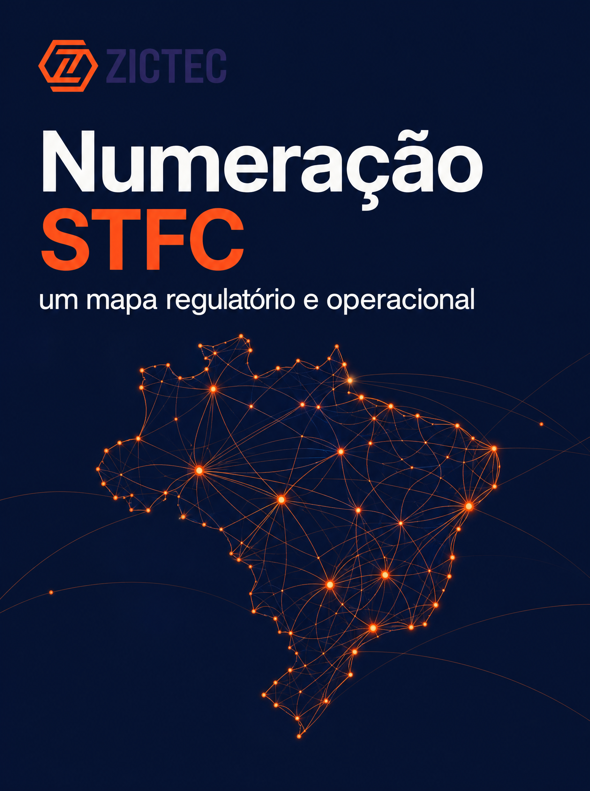
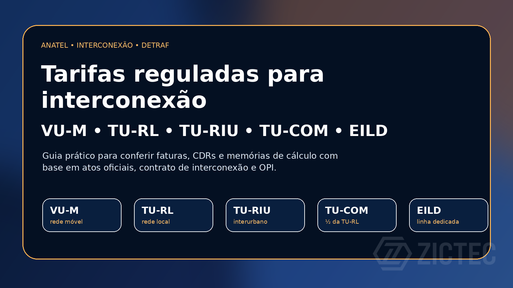

Conteúdo técnico-comercial para quem opera voz, STFC e telecom com responsabilidade.
Guias práticos, checklists e análises para transformar regulação, interconexão, SIP/SBC e autenticação de chamadas em decisões operacionais melhores.

Regulatório AnatelNumeração STFC em 2026: Áreas Locais por DDD e impactos para operadoras
Entenda a consolidação em 67 Áreas Locais e os impactos em roteamento, bilhetagem, interconexão, cadastros e sistemas legados.

Regulatório AnatelTarifas reguladas Anatel: interconexão, DETRAF, TU-RL, TU-RIU, TU-COM e VU-M
Guia prático para separar tarifas, conferir faturas, montar memória de cálculo e sustentar contestação técnica em operações STFC/SMP.
 SBC / ProSBC
SBC / ProSBC10 casos de uso para SBCs: quando a borda vira controle operacional
Interconexão, SIP Trunking, STIR/SHAKEN, TDoS, CPaaS e edge: onde um SBC deixa de ser apenas firewall SIP e vira peça crítica da operação de voz.
 VoIP / Qualidade
VoIP / QualidadeQualidade em chamadas VoIP: como diagnosticar perda, jitter, latência, codec e eco
Um fluxo prático para transformar reclamações de áudio ruim em evidência: CDR, RTCP, SIP trace, PCAP, MOS e correções por causa dominante.
 STFC para ISPs
STFC para ISPsISP e STFC: quando faz sentido entrar em telefonia fixa?
Como avaliar telefonia fixa como produto, operação, margem e responsabilidade regulatória — sem transformar voz em custo invisível.
 DETRAF e interconexão
DETRAF e interconexãoDETRAF na prática: onde operadoras perdem dinheiro sem perceber
Por que prestadoras menores muitas vezes pagam DETRAF cegamente, deixam de apresentar cobranças devidas e perdem margem sem perceber.
 SIP-I / SBC
SIP-I / SBCSIP-I, SBC e interconexão: a arquitetura mínima para operar voz com segurança
SIP-I não é SIP comum: entenda ISUP, legado SS7, perfil brasileiro, links dedicados, BGP e redundância com pares de SBCs.
 Chamada Verificada
Chamada VerificadaSTIR/SHAKEN e Origem Verificada: o caminho para chamadas com mais confiança
Histórico, evolução internacional, adoção no Brasil e tendências de autenticação, reputação e identificação de chamadas.
 SIP / SBC / Voz
SIP / SBC / VozKamailio, OpenSIPS e FreeSWITCH: onde cada peça entra numa arquitetura SIP
Entenda a diferença entre proxy SIP, B2BUA/media server e SBC — e por que arquiteturas de produção normalmente combinam bem essas peças.
Quer transformar uma dor da operação em conteúdo?
Podemos priorizar pautas por demanda comercial: STFC, DETRAF, SBC, Origem Verificada, suporte ou regulatório.